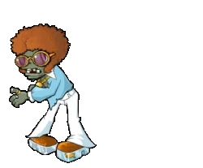

La música disco surgió a finales de la década de 1960 y principios de la de 1970 como una mezcla de estilos musicales en lugares de baile populares entre afroamericanos, hispanos, italoamericanos y la comunidad LGBT. Esta subcultura, impulsada por la música de baile y las discotecas, alcanzó su auge en los años 70, ofreciendo un refugio de problemas sociales y una plataforma para la libertad y el baile.
La palabra "disco" proviene de "discotheque", un tipo de club de baile conocido por tocar música popular. Como género y subcultura, la música disco alcanzó su máximo auge en la década de 1970, contribuyendo a su reputación de libertad, diversión, funk y moda. La música en sí tenía un sonido único: sintetizadores, instrumentos eléctricos, ritmo alegre y el ritmo de batería disco "four on the floor", del que Earl Young fue pionero.
Desde “Love To Love You” de Donna Summer hasta “YMCA” de Village People, la música disco dejó un legado claro e incluso inspiró a artistas de otros géneros, como el pop y el rock. Sin embargo, como aprenderás en “Disco: Banda Sonora de una Revolución”, su enorme influencia la convirtió en blanco fácil de apropiación y cambio por parte de fuerzas externas. Hoy en día, conocer la historia original y la definición de la música disco es una forma de reconocer a sus creadores.
Imagínate esto: A principios de los 70, el mundo está tan enredado como el cable de tu teléfono. Desde los disturbios de Stonewall y la guerra de Vietnam hasta la disolución de los Beatles y el estreno de "El Padrino", todo se está arreglando con la misma rapidez con la que se desmorona.
Esto es especialmente cierto en Nueva York, donde la crisis económica ha dejado a barrios enteros en apuros. Aunque los tiempos difíciles golpean a todos, gran parte de los problemas impactan desproporcionadamente las zonas que las personas de color consideran su hogar. Es como agitar una lata de Strawberry Crush: todo va a estallar, y podría ser simplemente psicodélico.
Claro, cuando el joven disc jockey David Mancuso organiza una fiesta privada en su loft del centro de Manhattan, no sabe nada de esto. Solo espera que su gran fiesta de San Valentín de 1970 le ayude a pagar el alquiler.
En cambio, ayuda a iniciar una revolución, y el resto es historia.